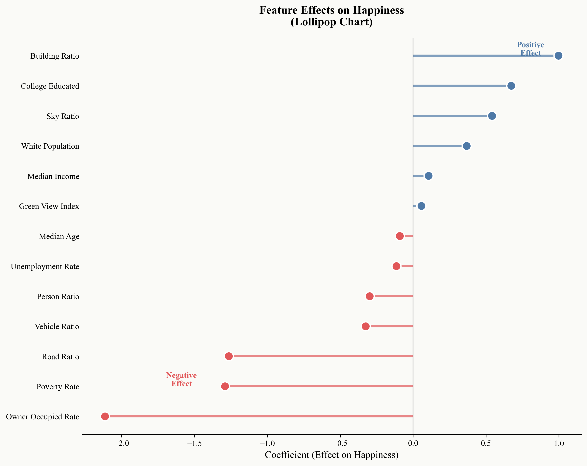

Traces of Joy
Exploring Urban Happiness through Machine Vision and Human Feeling
What makes a person truly happy? It might be a shared meal with friends, or simply standing in a place that feels right. This project maps the emotional geography of Philadelphia—combining street-view imagery, semantic segmentation, and machine learning to understand what makes urban environments feel “happy.”
“A lot of things need fixing in Philly, but there are a lot of good things here.”28
Happiness Points
Identified by Drexel University Students
40,000+
Sampling Points
Across Philadelphia streets
0.968
Model AUC
Logistic Regression performance
14
Features
Visual + Socioeconomic variables
Abstract
The Swiss psychoanalyst Carl Jung wrote extensively about the relationship between our inner world and the external environment, suggesting that this connection is vital to psychological health. Across cultures and histories, “happy places” share certain universal features—they are often safe, aesthetically pleasing, socially engaging, and meaningful.
This study explores whether these emotional patterns can be recognized from a city’s visual appearance. Using 28 happiness points identified by Drexel University students and approximately 40,000 road sampling points across Philadelphia, we employ a Positive-Unlabeled (PU) Learning approach that treats unlabeled locations as potentially happy rather than definitively unhappy. We extract visual features from Google Street View panoramic imagery using semantic segmentation (SegFormer) and combine them with Census tract-level socioeconomic variables to build predictive models.
The result is an emotional geography of Philadelphia—a map not of buildings or roads, but of feelings.
Key Findings
Positive Predictors
Building density, sky visibility, and education levels positively predict happiness — suggesting urban vitality matters.
Negative Predictors
Owner-occupancy rate, road coverage, and poverty rate are negative predictors — challenging conventional assumptions.
Key Insight
Rental-heavy urban areas may offer more social opportunities and public amenities than owner-occupied suburbs.
Research Framework
01
Data Collection
Sampling points generated every 200m along Philadelphia streets. GSV panoramic images collected via Google Maps API with 20-process parallel downloading.
02
Semantic Segmentation
SegFormer-B0 model extracts 6 visual features: sky ratio, green view index, building ratio, road ratio, vehicle ratio, and person ratio.
03
Census Integration
ACS 5-year estimates provide socioeconomic context: income, education, demographics, housing characteristics at tract level.
04
PU Learning Model
Positive-Unlabeled learning framework with Logistic Regression and Random Forest, using 5-fold cross-validation.
Preview: Feature Importance
Our analysis reveals which urban characteristics most strongly predict happiness. The visualization shows standardized coefficients from the logistic regression model.
Top Positive Factors:
- Building Ratio (+1.00)
- College Education (+0.70)
- Sky Visibility (+0.58)
Top Negative Factors:
- Owner Occupancy (-2.10)
- Poverty Rate (-1.28)
- Road Coverage (-1.23)

Contributors
FY
Fan Yang
MUSA Student
Weitzman School of Design, University of Pennsylvania
ZZ
Zhiyuan Zhao
MUSA Student
Weitzman School of Design, University of Pennsylvania
Course: MUSA 5500 — Geospatial Data Science In Python
Repository: Traces of Joy
Keywords: Urban Happiness Street View Imagery Semantic Segmentation PU Learning Spatial Analytics Urban Planning Philadelphia Machine Learning